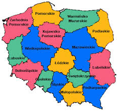

<map name="map">
<!-- #$-:Image map file created by GIMP Image Map plug-in -->
<!-- #$-:GIMP Image Map plug-in by Maurits Rijk -->
<!-- #$-:Please do not edit lines starting with "#$" -->
<!-- #$VERSION:2.3 -->
<!-- #$AUTHOR:ZST -->
<area shape="poly" coords="48,71,61,60,56,54,66,50,73,58,78,81,112,99,91,139,79,121,64,122,43,105,45,70,47,70" href="http://www.wielkopolska.pl" />
<area shape="circle" coords="120,120,26" href="http://lodzkie.pl" />
<area shape="rect" coords="139,137,171,167" href="http://www.swietokrzyskie.pl" />
</map>
